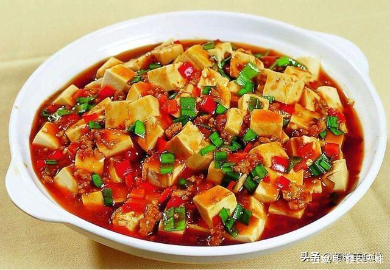
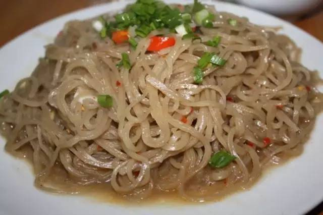
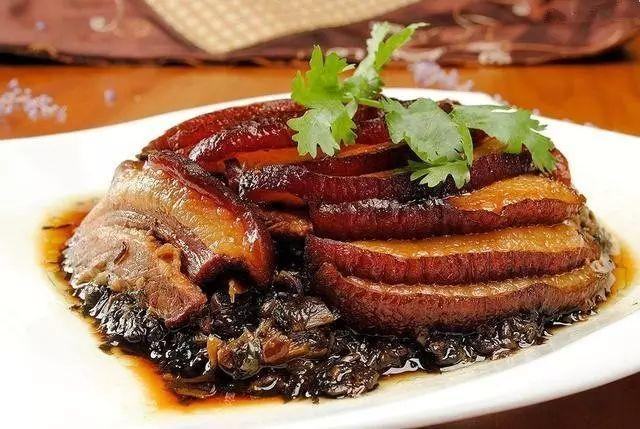

兴国粉笼床

兴国粉笼床还有个名字“四星望月”，这道菜对于兴国人或赣州人再熟悉不过了，当然，江西很多老俵和在外省的老俵应该对这道菜也不会陌生。现在与粉笼床搭配相当丰富，喜欢吃什么就配什么，鸡鸭鱼肉，萝卜土豆，粉干豆腐都应有尽有，美味不火。兴国县城还有许多乡镇茶馆都可以去品尝。
材料：活草鱼1条（重约750克）、水发粉干250克。调料：食用油125克、食盐5克、酱油75克、味精1克、辣椒酱75克、胡椒粉1克、薯粉90克、姜末10克、葱花25克、肉汤200克 。
烹饪步骤
1、草鱼去鳞、鳃和内脏，洗净，用刀从背部剖开，劈成两片，切成0.7厘米厚的鱼片，放入盆内，放辣椒酱、食用油、姜末、味精、薯粉拌匀待用。
2、炒锅置旺火上，放入肉汤、酱油、辣椒酱、食盐、味精、食用油烧沸，用薯粉加水调成湿淀粉，挂稀芡成卤汁待用。
3、蒸笼洗净，垫上青菜叶，将水发粉干拌上酱油、辣椒酱、食盐、味精、食用油放入蒸笼蒸10分钟。将鱼片放蒸笼内粉干上，上火再蒸3-5分钟，时间太长容易蒸老。浇上调好的稀卤汁，撒上葱花、胡椒粉，连笼上席
豆腐宴

豆腐宴顾名思义就是以豆浆而制成的豆腐美食系列，如新鲜石磨豆浆、豆腐脑、豆腐渣、炸豆腐渣、豆腐汤、煎豆腐、麻婆豆腐......。要去“中国风水文化第一村”的梅窖镇三僚村才能吃到比较正宗的。
在浸豆前一定要把壳脱去并筛尽，这是豆腐特别滑腻的原因；一定要把豆浆熬开，否则有生豆味；在熬浆和放石膏前要反复冲浆，把豆泡彻底清除，这是豆腐特别嫩的原因。另外，上浆后榨水要恰到好处。榨得太干，豆腐板结，吃的时候没有“滑”的口感。反之水分太多，一下锅就烂得不成形，口感也不好。
兴国鱼丝

兴国鱼丝又称与你相思，是兴国县别具特色的传统小吃，属于客家菜。而当地农村里还有另一个叫得最普遍的名字叫“淳钮”，如果用客家话叫出这个名字，大人小孩都知道你说的是哪一道菜。很久很久以前，兴国县有位聪明的女子，嫁给了一位船工为妻。因为丈夫经常出门在外，为让他不贪恋外面的繁华世界，不忘家，便仿效制粉干的方法，以鱼肉和薯粉为原料，精心制成鱼肉粉丝，并取名为“与你相思”，让丈夫带着在路上食用。丈夫每吃到鱼丝，就会想起家中的娇妻，所以，总是按时回家与妻子欢聚，决不留连在外。左邻右舍的女人们，纷纷向船工妻子取经，兴国鱼丝的做法也流传开了。
材料：鱼丝的制作方法颇有讲究。用草鱼剔除头和骨，将鱼肉剁成肉酱，掺拌适量薯粉，做成大块，做好的原料就像北方的家中和面粉一样，只是里面是鱼肉和薯粉，颜色也较暗，原料准备好后，将其铺在一个竹子编制的箩筐上，然后把箩筐放在烧开水的大锅中，加热蒸熟，并晾干至不粘手时，把它切成丝条，最后晒干储存。烹调时用鲜肉汤或鲜鸡汤伴煮，适当配料，还可油炸、凉拌。
兴国倒蒸红薯干
兴国特产红薯干选用江西赣州兴国将军县高兴乡，茶园乡教富村，山区无公害优质鲜红薯为原料，经传统工艺和现代技术相结合加工而成，使红薯保持了天然营养——氨基酸，纤维素和人体必需的微量元素，长期吃用有利消食、健胃。自近年投放区外市场，深受消费者好评。本产品与福建连平县薯干不同之处是没加任何食品添加剂（倒蒸）。是纯绿色食品。本产品分薯干和倒蒸薯干两种。产品季节性较强。
一、选薯。选择表皮光滑细嫩、无虫孔、无破烂、无异味，大小以100～150克的鲜薯为宜。
二、清洗。选好的红薯要用水将表面泥土清洗干净。清洗时，以冲洗为宜，切忌放在竹编的器具中用力揉搓，这样会损伤表面细皮，不利于蒸煮后剥皮。
三、蒸煮。将清洗干净的红薯分大小分批放到蒸笼里蒸煮。蒸煮时，火要旺。蒸煮时间长短的确定以红薯刚过心为宜，因为刚过心的红薯才便于加工，不过心，加工成的薯干颜色发黑，有异味；但蒸煮过分，无粘连性，变得稀烂，不利切条。蒸好后及时出笼冷却。
四、剥皮。将蒸煮好、冷却的薯块进行剥皮，剥皮以剥净表皮为宜。
五、切片。将剥了皮的薯块用刀切成长条。切条时，要根据薯块的形状，以切成薄长条为宜，其厚度在1～3厘米之间。
六、晒干。由于刚煮后的水份多，要将其晒干。
七、倒蒸。将晒干的薯片，再次蒸一次，时间约为5-7小时，效果是透明茶色为止
八、晒干。再次晒干
梅菜扣肉

这是客家人的一道传统美食，把五花肉煮熟后再把猪皮炸成金黄色。配上提前晒制好的梅菜用中型高碗再放置蒸笼里蒸至入肉很松后即可将蒸笼内的中型高碗倒扣在上桌的平底圆盘中，这样一道美味的梅菜扣肉就出锅啦。一般客家人置办喜事这碗菜是必不可少的。
通常是将五花肉上汤锅煮透，加老抽，油炸上色，再切成肉片。之后加葱、姜等调料炒片刻，再下汤用小火焖烂，五花肉盛入碗里，上铺梅菜段，倒入原汤蒸透。走菜时，把肉反扣在盘中。成菜后，肉烂味香，吃起来咸中略带甜味，肥而不腻。
梅菜扣肉与盐焗鸡、酿豆腐，被称为客家三件宝。